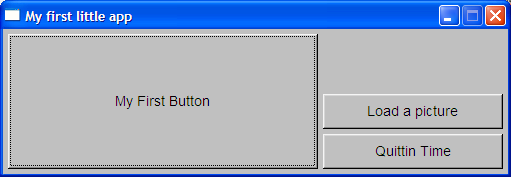
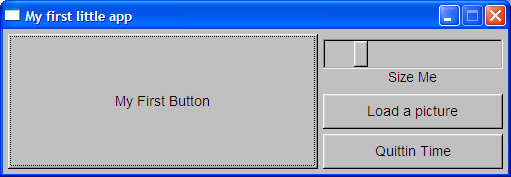
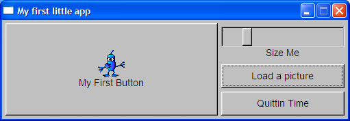

Something better
So that last example was kinda lame ... How about a nice window and some buttons ?
OK, create a file called "step1.lua" and type this code in :
window = fltk:Fl_Window(505, 145, "My first little app")
fltk:Fl_Button(5, 5, 310, 135, "My First Button")
fltk:Fl_Button(320, 65, 180, 35, "Load a picture")
fltk:Fl_Button(320, 105, 180, 35, "Quittin Time")
window:show()
Fl:run()
Now run the file like we did before ("bin/murgaLua step1.lua") ...
This is what you should see :

Umm, OK ... We now have a basic UI.
It should be fairly obvious how we created the buttons : we looked up "Fl_Window", and "Fl_Button" in the FLTK reference and found the parameters we needed.
Then we worked how where and how big we wanted everything and put the calls together ...
There is a much better/faster way to do this ... But that's in the next tutorial :-)
Anyway, those controls don't do anything yet, so copy your file to "step2.lua" and make the changes below (marked in red) :
window = fltk:Fl_Window(505, 145, "My first little app")
-- Step one, we have to assign our button to a variable in order
-- to be able to do things with it ...
firstButton = fltk:Fl_Button(5, 5, 310, 135, "My First Button")
fltk:Fl_Button(320, 65, 180, 35, "Load a picture")
fltk:Fl_Button(320, 105, 180, 35, "Quittin Time")
-- Step two, add a slider and get it change another control
slider = fltk:Fl_Slider(320, 10, 180, 30, "Size Me")
slider:type(1)
slider:range(5, 55)
slider:step(1)
slider:value(firstButton:labelsize())
slider:callback(
function(slider)
firstButton:labelsize(slider:value())
firstButton:label("My size is " .. slider:value())
firstButton:redraw()
end)
window:show()
Fl:run()
If you made the changes correctly you should be able to run the file and see the following (try moving the slider) :

So now we have added some behavior, as you see we had to assign our controls to variables in order to anything with them.
Still not very impressive ... Let's try to put some more complex behavior in there.
Copy your file to "step2.lua" and make these changes (marked in red again) :
window = fltk:Fl_Window(505, 145, "My first little app");
firstButton = fltk:Fl_Button(5, 5, 310, 135, "My First Button");
-- Step three, we name everything
loadImage = fltk:Fl_Button(320, 65, 180, 35, "Load a picture");
quitButton = fltk:Fl_Button(320, 105, 180, 35, "Quittin Time");
slider = fltk:Fl_Slider(320, 10, 180, 30, "Size Me");
slider:type(1)
slider:range(5, 55)
slider:step(1)
slider:value(firstButton:labelsize())
slider:callback(
function(slider)
firstButton:labelsize(slider:value())
firstButton:label("My size is " .. slider:value())
firstButton:redraw()
end)
-- Step four, add a callback that we can share.
function quit_callback(object)
if fltk.fl_ask("Are you sure ?") >= 1 then
window:hide()
end
end
-- Step five, assign the callback to two objects.
window:callback(quit_callback)
quitButton:callback(quit_callback)
-- Step six, create a callback function to play with pictures
function loadImage_callback(object)
-- Required before we can use some of the image APIs
fltk.fl_register_images()
-- Open a nice file chooser to pick an image.
fileName = fltk.fl_file_chooser("Choose a picture", "Image Files (*.{bmp,gif,jpg,png})", nil, nil)
-- Load and create an image object
image = Fl_Shared_Image.get(fileName)
-- Assign it to a control and make sure the UI portion is redrawn.
firstButton:image(image)
firstButton:redraw()
end
-- Step seven, assign the image load function to the "Load a picture" button
loadImage:callback(loadImage_callback)
window:show()
Fl:run()
Now when you run the program click on the "Load a picture" button and choose the "examples/littlePic.gif" file ... You should see this :

OK, now this a little more like it, we created a little function to choose and load a picture and we displayed it in one of our controls.
We are also using two dialogs (asking a question, and choosing a file), and we hooked into the window so that we can ask the user if he really wants to exit.
Now lets see if we can make this whole UI design easier (on to FLUID) ...